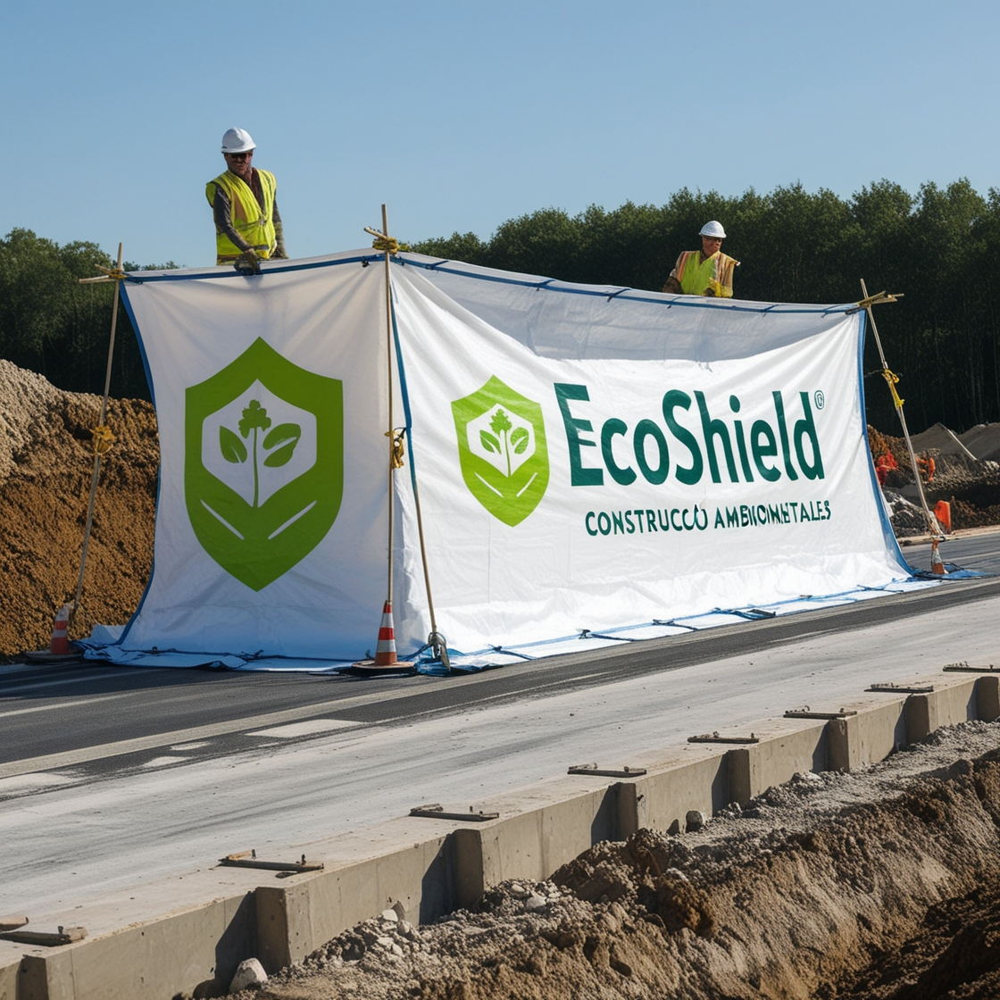
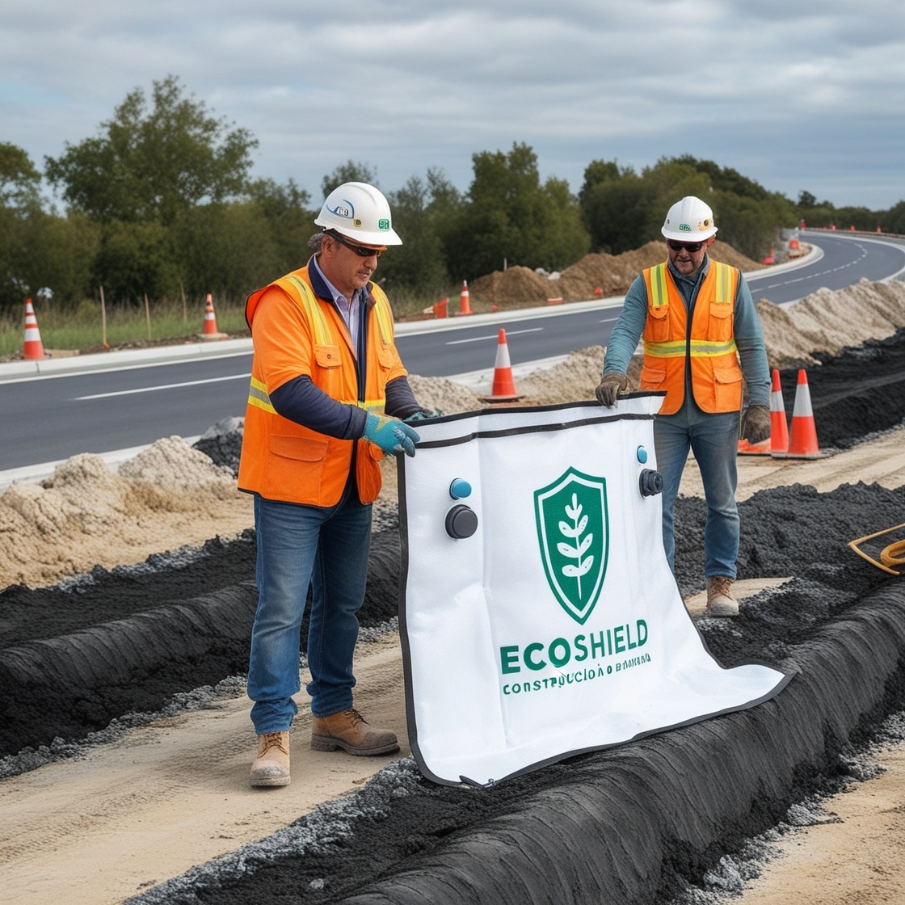
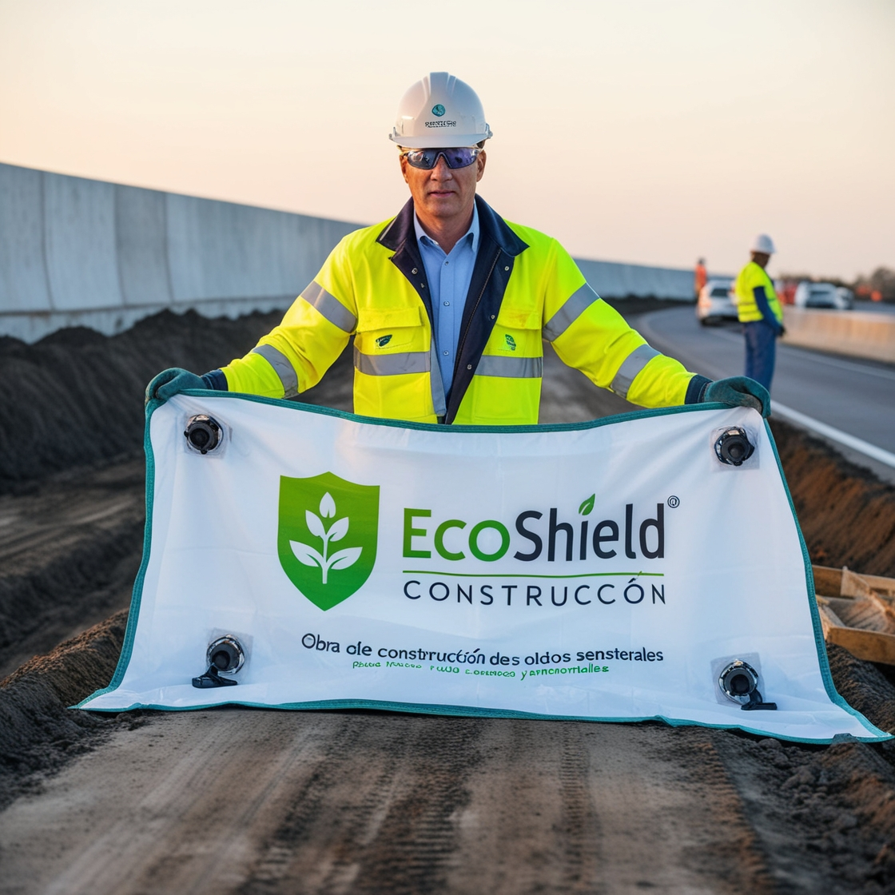

Imágenes del Producto
  Sobre EcoShield
EcoShield es una lona innovadora diseñada para proteger el medio ambiente y las comunidades cercanas a proyectos de construcción. Con su diseño multicapa, reduce el ruido, captura el polvo y ofrece una solución sostenible con tecnología avanzada.
Características:
- Reducción de ruido hasta 75%.
- Sistema de filtración de polvo de alta eficiencia.
- Sensores inteligentes para monitorear el ambiente.
- Materiales ecológicos y duraderos.